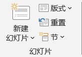
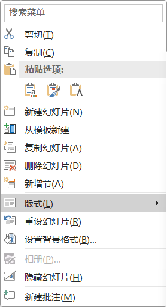
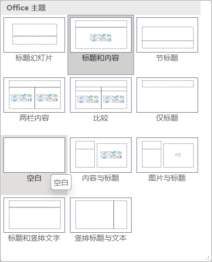
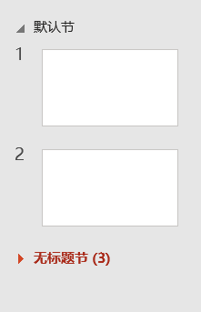
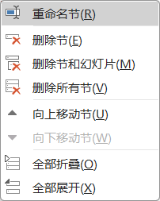
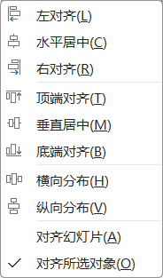

开始
Home
幻灯片
-
 幻灯片 - 新建幻灯片
- 在"幻灯片"窗格中，将光标定位到插入位置的前后幻灯片中间，出现一条红色提示线，按回车 Enter；或使用菜单命令"新建幻灯片"
- 快捷键 CTRL + M
- 版式
- 为选择的幻灯片指定版式
- 通常使用右键菜单操作
-
 幻灯片右键菜单  幻灯片右键菜单 - 版式 - 重置
- 幻灯片应用版式后，如果对内容进行了样式调整，想放弃调整，可以使用这个命令，还原到版式设置的最初样式
- 节
- 默认情况下，所有幻灯片属于同一节，同word
- 每个节可以单独设置主题
- 可以插入节来归类幻灯片：定位 → "开始" → "节" → "新增节"，插入一个节，默认名字是"无标题节"
- 插入新节后，前面的幻灯片自动划分在"默认节"
- 右键单击节名字，可以修改节名字、删除节等更多节的操作
- 点击节名字前面的三角符号，可以展开和折叠幻灯片
-
 幻灯片信息  节的右键菜单 - 幻灯片基本操作
- 插入
- 选择：单选、多选、连续选择SHift + 单击、断续选择Ctrl + 单击、全选CTRL + A
- 移动：选择并拖动；幻灯片数量多的时候，使用"幻灯片浏览"视图操作
- 复制：选择并复制 按键 Ctrl + C
- 粘贴：定位并粘贴 按键 Ctrl + V
- 删除：选择并删除，按键 Delete
- 版式：右键幻灯片 → "版式"；或选择幻灯片 → "开始" → "幻灯片" → "版式"
- 绘图
- 排列
- 单个元素：单个元素的参考对象是幻灯片
- 多个元素：按照他们的占用空间指定排列方式；排列指定后，可以使用"组合"，再将他们整体和幻灯片实现某种对齐
-
 元素排列 -
Tips动态选项卡的使用